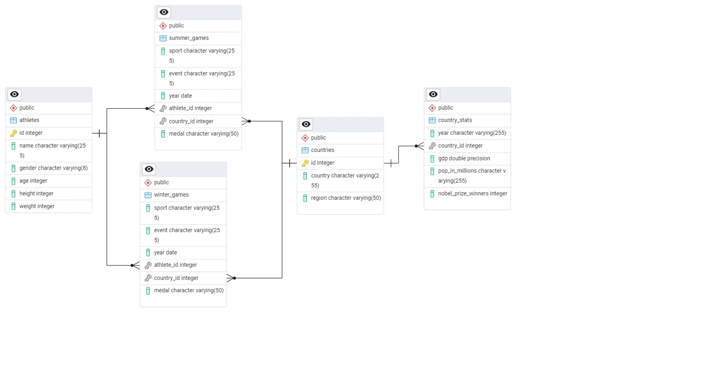

Sports / SQL exploration
Olympic Games SQL Analytics
Relating athletes, countries and Summer/Winter Games through PostgreSQL queries and a five-table source model.

Portfolio / training project · Original project artifacts · SQL
01 / BUSINESS CHALLENGE
The question behind the work.
Questions about athletes and national performance require joining event records with demographic and country context. Table grain and relationships matter before any aggregate can be interpreted.
02 / DATASET & OBJECTIVES
Start with the context.
The published repository contains athletes, countries, country_stats, summer_games and winter_games CSVs. This is a learning/portfolio analysis; a complete 1896–2016 coverage claim has not been verified.
Project objectives
- Explore athlete participation and medal-related questions.
- Join country and athlete attributes to event records.
- Practice readable aggregations, rankings and data preparation in SQL.
03 / TECHNICAL APPROACH
How the pieces connect.
PostgreSQL scripts create tables, load CSVs and explore joins, grouped summaries, subqueries and window functions. The actual source uses PostgreSQL, correcting the previous portfolio's SQL Server label for this project.
ARCHITECTURE / DATA MODEL
summer_games and winter_games connect to athletes through athlete_id and countries through country_id. country_stats adds year-specific GDP and population context. This is a five-table analytical source model, not a verified constrained production schema.
Implementation
The source contains exploratory SQL for sport/event counts, athlete attributes, medals and country comparisons. Some statements are draft exercises and require correction or execution-order review before reuse as a complete pipeline.
04 / VERIFIED OUTCOMES
What the work demonstrates.
The published scripts and model make SQL analysis techniques inspectable. No predictive model, verified forecast or independently reproduced numerical finding is claimed.
05 / SOURCE MATERIAL
Look closer.
Technologies
06 / VISUAL RESULTS
The original artifacts.
Genuine project visuals, retained from the original portfolio. Open any image to inspect it in full.

LET’S MAKE IT CLEARER
Let’s make your data useful.
Tell me what you’re working with, and what you need to understand.